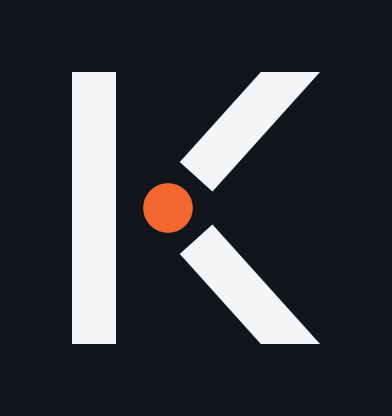
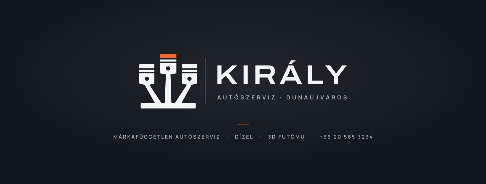
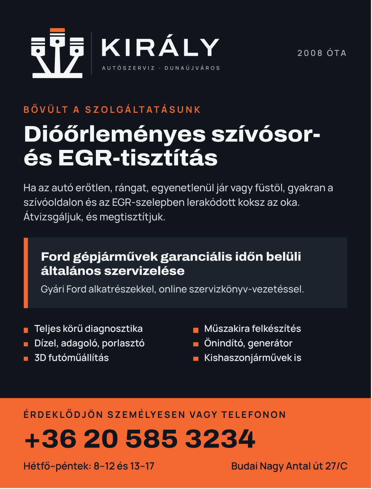

01Koncepció
Dugattyúkorona
JavaslatomHárom dugattyú hajtókarral – a középső magasabb, narancs fejjel, így együtt egy koronát formáznak. A „Király” név és a motorjavítás egyetlen jelben: aki ránéz, egyszerre látja a szakmát és a nevet.
Erős, egyszerű forma: profilképen, matricán, munkaruhán és kapun is azonnal felismerhető.
Fő változat
Sötét háttéren
Jel

Facebook-profil

